Mac - 終端機改造 (1) 安裝 iTerm2
Posted on Fri 30 April 2021 in iterm2
前言
Mac 中內建的 Terminal 本身並沒有太多的功能，並且能夠客製化的如配色也非常少，因此此篇文章介紹如何透過 iTerm2 與 zsh 製作出好用的 Terminal 與 Bash。
步驟一：安裝 iTerm2
iTerm2 是一款 Mac 上強大的 Terminal 軟體，有著許多 Mac 內建 Terminal 沒有的特色功能或是強化功能，例如個人化的顏色設定可調性比內建的多，也可以直接透過 Tab 去選擇目錄進入，不需要都使用指令；多分頁與多視窗；也具備強大的搜尋功能，甚至 AutoComplete 也能做到下拉選單去選擇；建立不同的個人化設定並可以切換；錄製播放...等等。
因此 iTerm2 已經成為 Mac 最具指標的 Terminal ，而安裝 iTerm2 可以直接透過 Homebrew Cask 安裝來方便管理軟體，如下：
$> brew cask install iterm2
或是直接去官網下載：
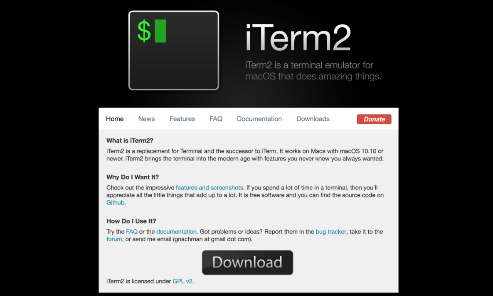
安裝完後會在應用程式中出現，打開如下：
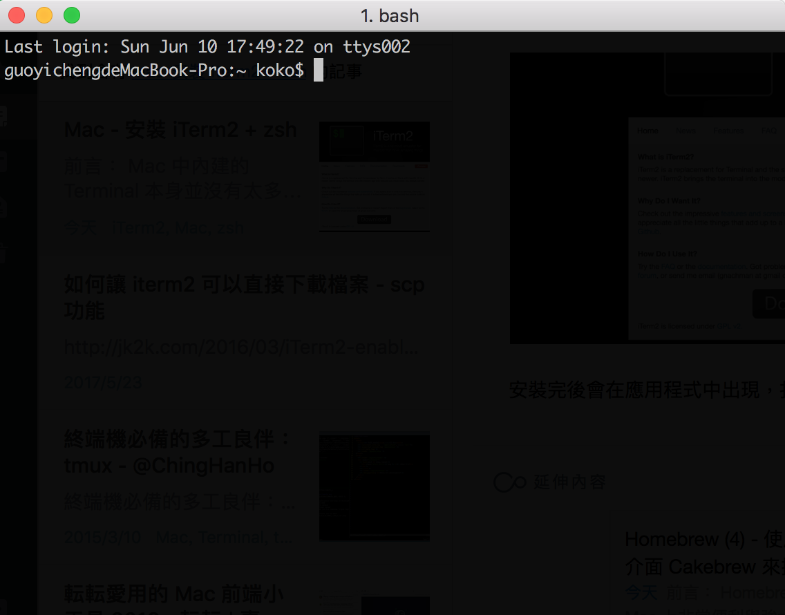
(1.) 基本功能介紹：分頁使用
開啟分頁：透過 Cmd + t 兩個按鍵即可開啟分頁多畫面
分頁切換：可透過 Cmd ＋ 方向鍵 移動 Tab 頁
直接分頁跳轉：直接 Cmd + 數字 鍵跳到其他 Tab 頁
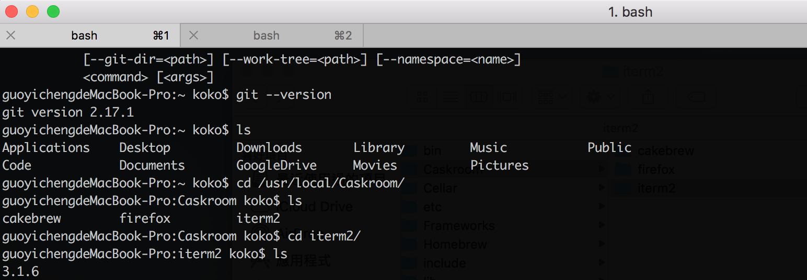
(2.) 基本功能介紹：全域搜尋
Cmd + f 兩個按鍵搜尋的關鍵字會直接全部標示。
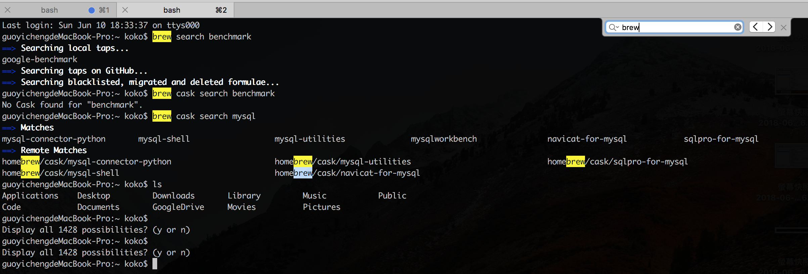
(3.) 基本功能介紹：直接點選目錄開啟
透過 Cmd + 滑鼠 去按 Terminal 中指令的目錄，會直接開啟視窗。
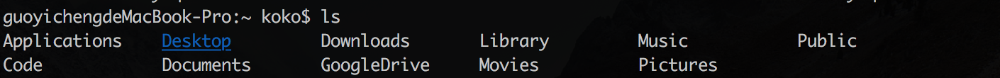
(4.) 基本功能介紹：Auto Complete 下拉提示
透過按壓 Cmd + ; 兩個按鍵，會顯示 Auto Complete 的下拉選擇。
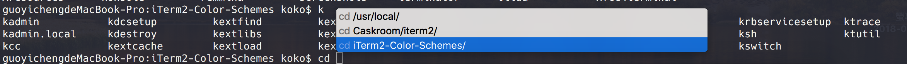
(5.)新分頁路徑重複
當透過 Cmd + Tab 兩個按鍵開啟新分頁時，會顯示路徑在前一個分頁的位置，而不是 Home 目錄，如下圖：
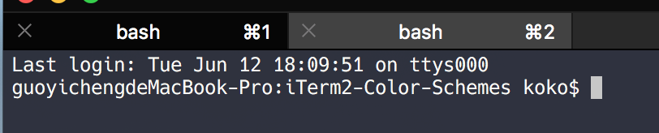
(6.)搜尋歷史指令
透過 Cmd + Shift + ; 三個按鍵可以顯示歷史指令：
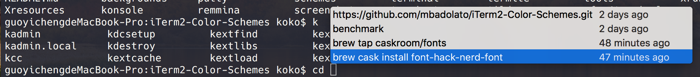
(7.)水平與垂直切割螢幕(多 Panel)
iTerm2 也支援水平與垂直的畫面切割，每一過新的話面就是新的互動 Shell Panel，透過此方式可以多操作。
水平切割：Cmd + D 兩個按鍵
垂直切割： Cmd + Shift + D 三個按鍵
切換顯示的 Panel： Cmd + Option + 方向鍵
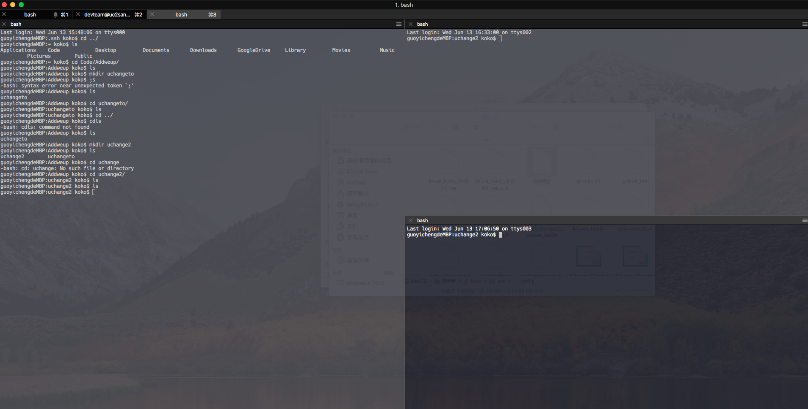
(8.)顯示目前游標位置
有時候因為畫面資訊太多，會無法容易找到游標位置，可以透過 Cmd + / 兩個按鍵找出。
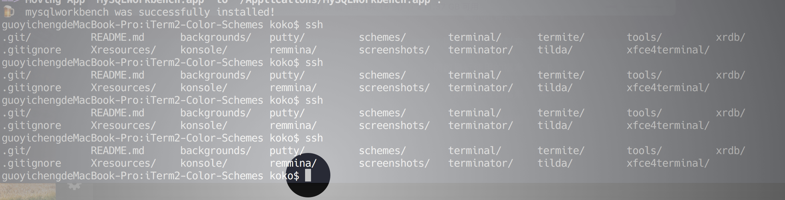
(9.)直接往下轉到新的畫面
透過輸入 Cmd + r 會如同輸入 Clear 顯示新的乾淨畫面，但是與 Clear 不同的是，並不會真的清掉，只是往下滾動到新的畫面出來，如下：
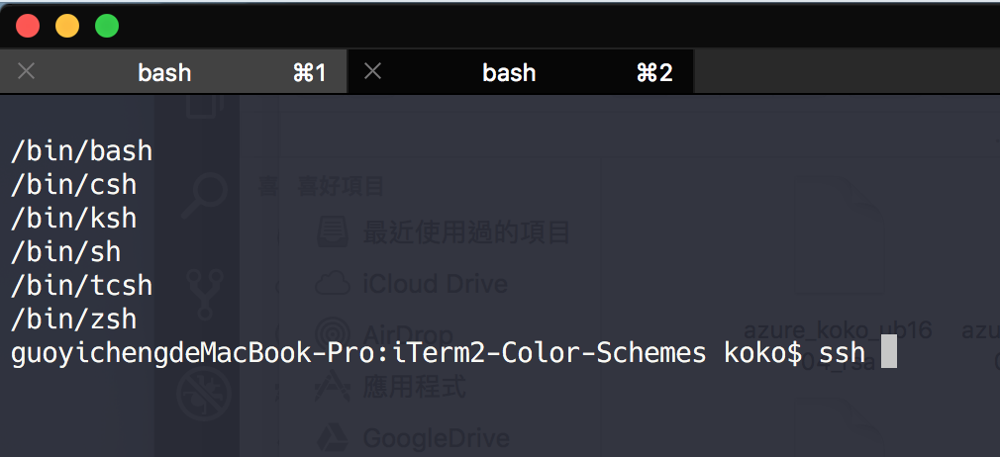
(10.)清空當前輸入的行內容
當在輸入指令到一半時，要全部清空輸入的內容，可以透過 Ctrl + u 清空
(11.)選擇便是複製
透過滑鼠拖拉想要複製的內容後，直接按著 Cmd + 滑鼠點擊 拖拉內容，便會複製，之後只要 Cmd + v 貼上即可
(12.) 自動補齊
透過輸入 Cmd + ; 便會根據指令的歷史提示顯示可以自動補齊的內容
(13.) 顯示最近的目錄
透過輸入 Option + Cmd + / 便會根據指令的歷史提示顯示可以自動補齊的內容
步驟二：設定 iTerm2
以下來客製化自己的 iTerm2 ，以下主要會設定的有 1. 建立自己的 Profile，設定 Color 、Terminal 與 Text。
1.建立自己的 iTerm2 Profile
點選左上角 iTerm2 選單 > Preferences > Profiles ，點選視窗左下方的 + 並建立一個自己的 Profile 如下：
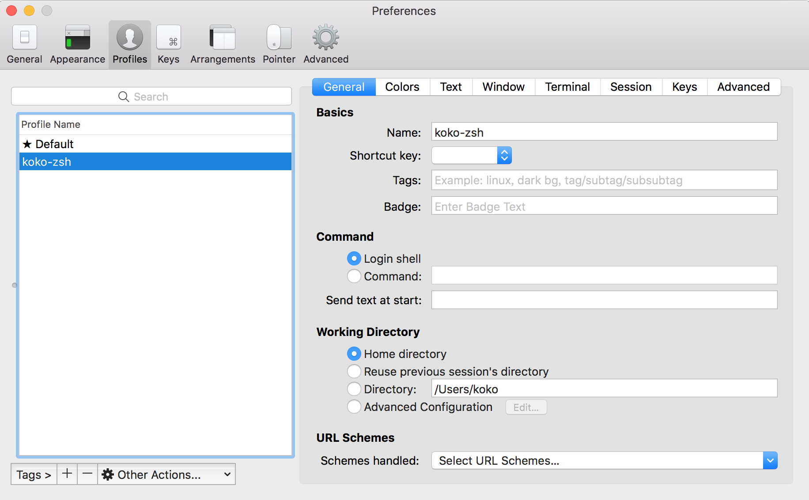
並且點選 Other Actions > Set as Default Profile 使得以後開啟 iTerm2 都以此設定檔為主：
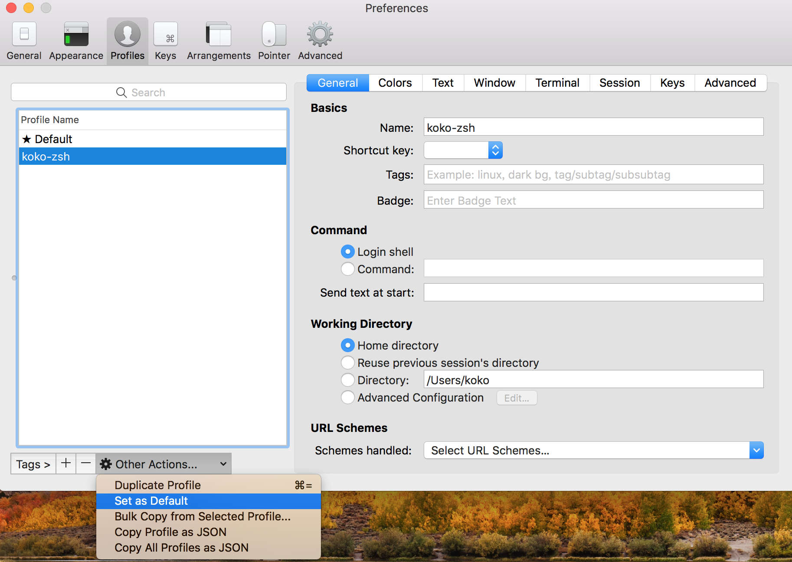
2.確認 Report Terminal Type 為 xterm-256color 與設定捲軸可以捲動的 Buffer 長度
設定 Report Terminal Type 為 xterm-256color 是為了使 iTerm2 可以使呈現的顏色較飽滿，再來設定 捲軸 Buffer 長度可以使為了要捲動回去查詢時可以直接看到紀錄 （此處不一定要設為 Unlimited scrollback)
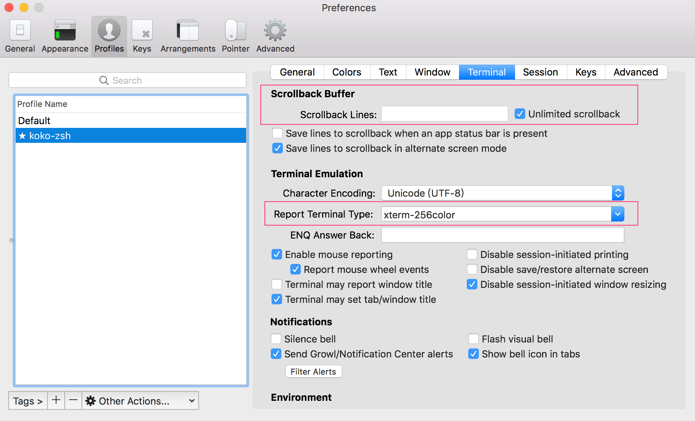
3.設定開啟新分頁路徑重複
點選左上角 iTerm2 選單 > Preferences > Profiles > General 的 Wording Directory 勾選 Reuse previous tab’s directory，如下圖：
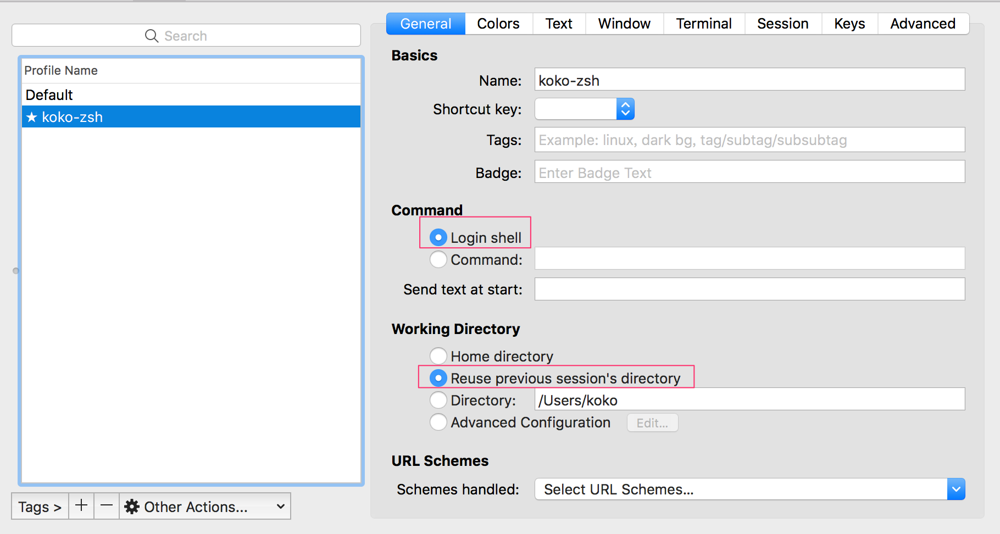
4.設定 Color Scheme
點選 Colors 設定想要 Terminal 配色，此處除了內建色盤外，也提供了以個常見的知名配色，例如 Solarized Dark 等，不過如果想要有可多的配色選擇可以從 Github 上的 iTerm2-Color-Schemes 下載並 import 進去。
此處如果為了方便一同管理，可以從 git clone 此 iTerm2 Color Schemes 的檔案到 Caskroom 下 iTerm2 的資料目錄中：
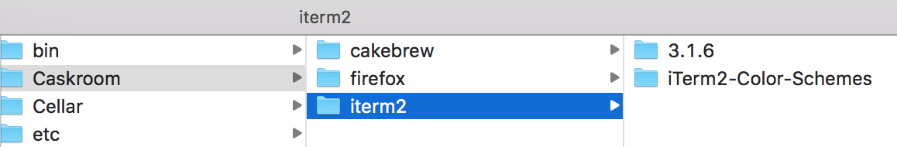
選擇目錄下的 scheme 目錄，並 import 想要的色彩方案：
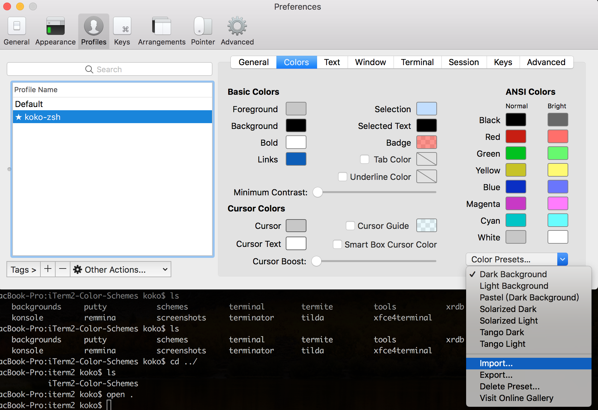
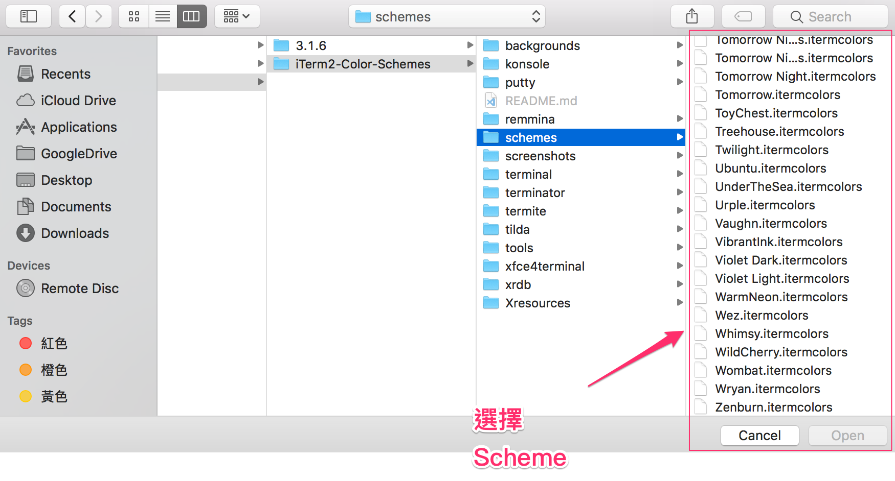
另外，Import 完後還要記得選擇新的 Scheme 才會生效。
如下，此為 匯入 Dracula 的 theme 後的樣貌，會發現顏色有直接變化：
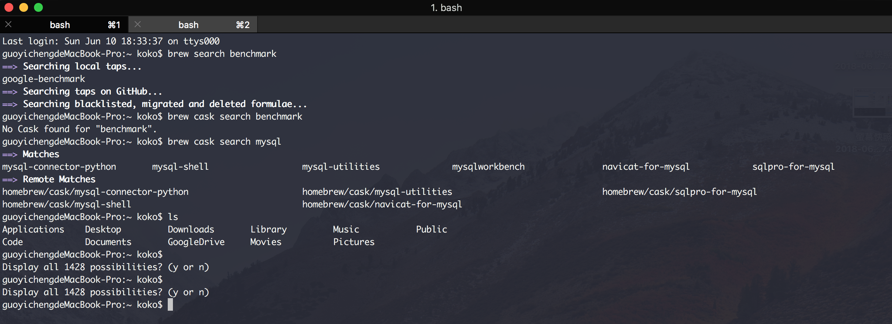
5.安裝與設定 Text Font 字型
後續安裝 zsh 提供的主題時，有許多的主題會應用到特殊的字體或圖示 icon，但是 iTerm2 內建中卻沒有提供，因此可能會出現亂碼或問號。
為了要解決這個問題，我們再來會需要先安裝擴充字型圖示。至於擴充字型的部分，可以到 Homebrew Cask 中尋找，在 Homebrew Cask Fonts 這個 Repository 可以 Tap 去下載，例如下載 font-hack-nerd-font 這套字體：
$> brew tap homebrew/cask-fonts
$> brew cask install font-hack-nerd-font
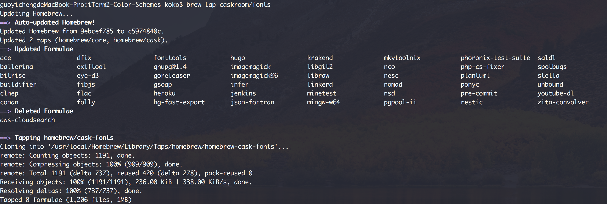
執行安裝字體：
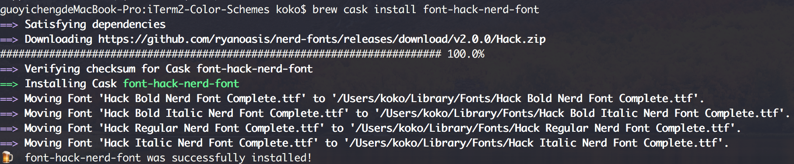
透過 Homebrew Cask 下載好字體，就會直接安裝在 Mac 內建了，因此要使用此字體只需如下點選 Change Font 尋找即可：
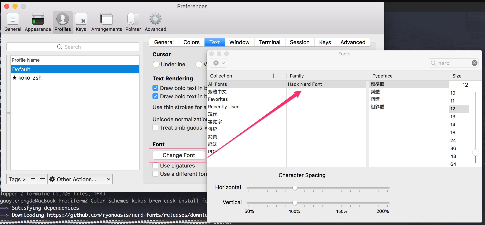
以下是使用預設與 hack nerd font 字體後的效果，預設的 Monaco 字體，更換後的 hack nerd font 字體：
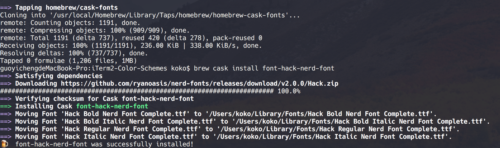
至此已經完成 iTerm2 的安裝與簡單的個性化設定，如果有需要瞭解更多的 iTerm2 功能，可以查閱官網。
6. 設定鍵盤快捷鍵可以透過 Ctrl + 左右箭頭 文字間移動
打開 Preference > 點選 Profile 下的 Key ，選擇要編輯的，Profile Name，然後點選 Presets > 選擇 Natural Text Editing。
完成後關掉再重開即可以在輸入的指令字串間，透過Ctrl + 鍵盤的左右鍵，移動到前一個文字或後一個文字；透過 Cmd + 左右鍵，則可以移動到尾端或開頭。
word backwards using Option ⌥ + ← and a word forwards using Option ⌥ + →, move to the start of the line using fn + ← and to the end of the line with fn + →. Also you can delete a word backwards using Option ⌥ + ⌫, delete the whole line using Command ⌘ + ⌫.
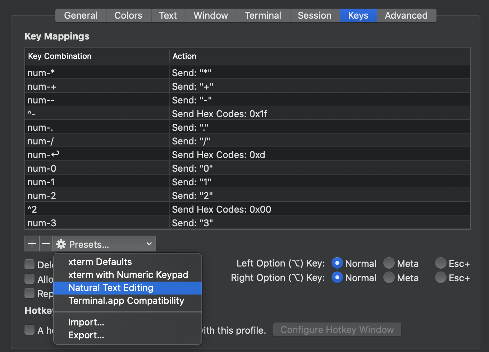